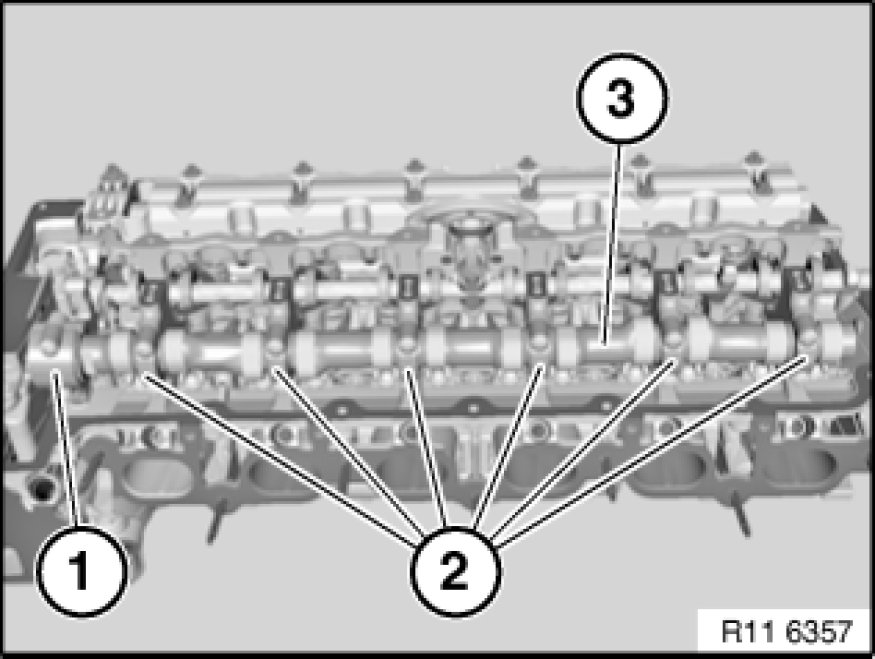
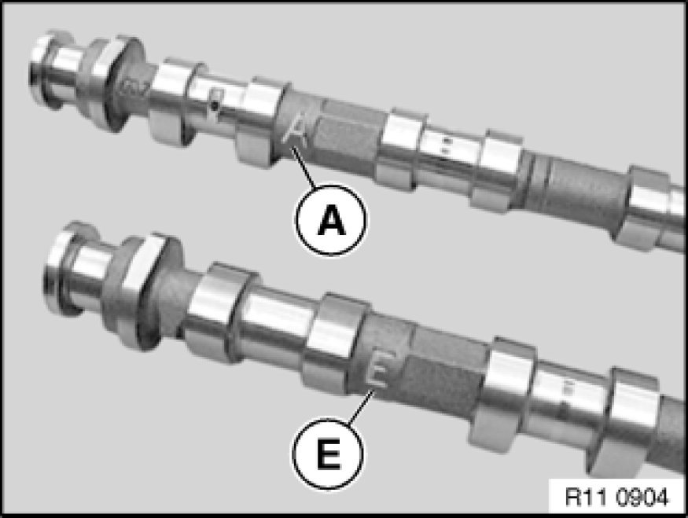
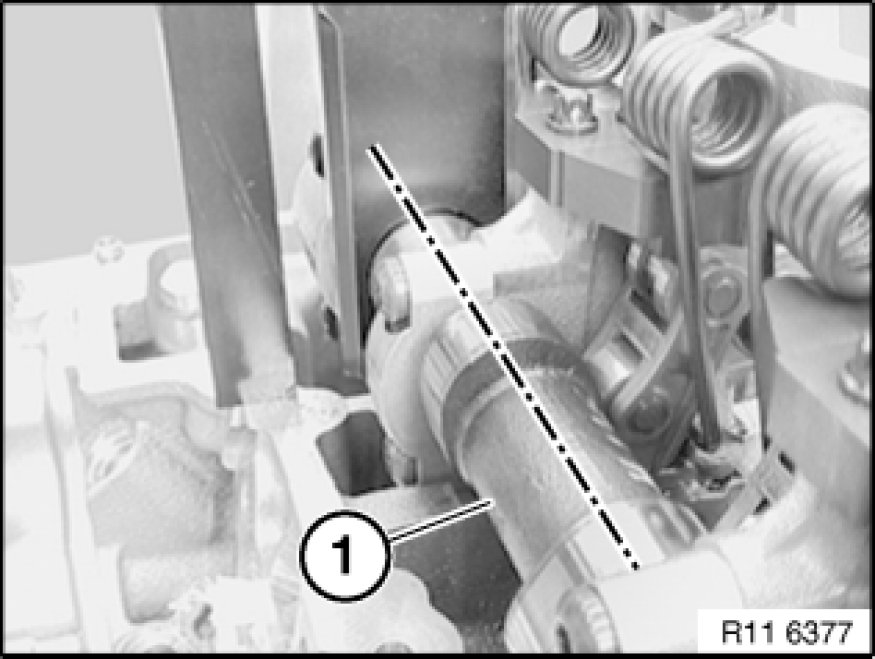

Removing and Installing/Replacing Inlet Camshaft
11 31 025 - Removing and installing/replacing inlet camshaft (N52K)

Special tools required:
- 11 4 281 11 4 280 Gauge
- 11 4 481 11 4 480 Placement Boards (2 X)

Important!
Aluminium-magnesium materials.
No steel screws/bolts may be used due to the threat of electrochemical corrosion.
A magnesium crankcase requires aluminium screws/bolts exclusively.
Aluminium screws/bolts must be replaced each time they are released.
Aluminium screws/bolts are permitted with and without
color coding (blue).
For reliable identification:
Aluminium screws/bolts are not magnetic.
Jointing torque and angle of rotation must be observed without fail (risk of damage).

Necessary preliminary tasks:
- Remove cylinder head cover Service and Repair
- Remove inlet adjustment unit Removing and Installing/Replacing Inlet and Exhaust Adjustment Units (N52K)
- Remove intermediate lever Removing and Installing/Replacing Intermediate Levers (N52K)
- Adjust valve timing Adjustments

Note:
All bearing caps (1 and 2) are marked with numbers from 1 to 6.
Bearing cap (1) is a thrust bearing.
Release screws on bearing caps 1 to 6 (1 and 2).
Tightening torque 11 31 2AZ 11 31 Camshaft.
Set all bearing caps down in special tool 11 4 481 11 4 480 Placement Boards (2 X) in a tidy and orderly fashion.
Remove inlet camshaft (2) towards top.
Installation Note:
Clean all bearing points and lubricate with oil.
Check plain compression rings (1) for damage and replace if necessary.

Plain compression rings (1) are engaged at joint.
Press plain compression rings (1) apart upwards and downwards and removed towards front.
Important!
Plain compression rings (1) can easily break.

Important!
Markings of inlet and exhaust camshafts are different.
Mixing up the inlet and exhaust camshaft will result in engine damage.
A - Exhaust camshaft.
E - Inlet camshaft

Insert inlet camshaft (1) so that part number on twin surface points upwards.
Position inlet camshaft (1) so that cams point upwards at an angle.
Attach special tool 11 4 281 11 4 280 Gauge to twin surface.

Assemble engine.